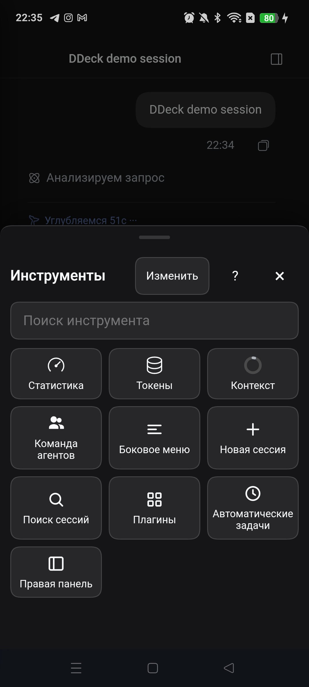

DeepSeek Harness — с телефона.
DDeck — Android-пульт к вашему компьютеру с DeepSeek Harness: чат, инструменты, очередь, файлы, терминал и несколько компьютеров. Без облака DDeck.
Android 10+. Бета: не финальный релиз. Контрольная сумма — в release notes.
Установка плагина
После публикации пакета в npm:
dsh plugin --profile web add ddeck-remoteИли установите из маркета DSH, добавив индекс:
https://nemezida1337.github.io/ddeck-client/index.jsonЧто умеет
Чат и инструменты
Полноценный DSH на телефоне: стриминг, инструменты, субагенты, очередь, файлы и терминал.
Своя нижняя панель
Инструменты под большим пальцем: свайп, сетка «Все инструменты», сворачивание и настройка плиток.
Своё боковое меню
Рабочие области, сессии, поиск, аккаунт и настройки с крупными целями.
Несколько компьютеров
Телефон хранит несколько сопряжённых компьютеров и переключается между ними без разрыва сессии.
Телефон через телефон
Первый телефон показывает QR и одноразовый код для второго.
Приватность
TLS с закреплённым сертификатом, данные только на вашем компьютере. Без облака DDeck.
Как это выглядит


